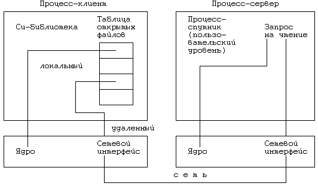

В предыдущем разделе мы рассмотрели тип сильносвязанной системы, для которого характерна посылка всех возникающих на периферийном процессоре обращений к функциям подсистемы управления файлами на удаленный (центральный) процессор. Теперь перейдем к рассмотрению систем с менее сильной связью, которые состоят из машин, производящих обращение к файлам, находящимся на других машинах. В сети, состоящей из персональных компьютеров и рабочих станций, например, пользователи часто обращаются к файлам, расположенным на большой машине. В последующих двух разделах мы рассмотрим такие конфигурации систем, в которых все системные функции выполняются в локальных подсистемах, но при этом имеется возможность обращения к файлам (через функции подсистемы управления файлами), расположенным на других машинах.
Для идентифицирования удаленных файлов в этих системах используется один из следующих двух путей. В одних системах в составное имя файла добавляется специальный символ: компонента имени, предшествующая этому символу, идентифицирует машину, остальная часть имени - файл, находящийся на этой машине. Так, например, составное имя
идентифицирует файл "/fs1/mjb/rje", находящийся на машине "sftig". Такая схема идентифицирования файла соответствует соглашению, установленному программой uucp относительно передачи файлов между системами типа UNIX. В другой схеме удаленные файлы идентифицируются добавлением к имени специального префикса, например:
где "/../" - префикс, свидетельствующий о том, что файл удаленный; вторая компонента имени файла является именем удаленной машины. В данной схеме используется привычный синтаксис имен файлов в системе UNIX, поэтому в отличие от первой схемы здесь пользовательским программам нет необходимости приноравливаться к использованию имен, имеющих необычную конструкцию (см. [Pike 85]).

Рисунок 13.9. Формулирование запросов к файловому серверу (процессору)
Всю оставшуюся часть раздела мы посвятим рассмотрению модели системы, использующей связь типа Newcastle, в которой ядро не занимается распознаванием удаленных файлов; эта функция полностью возлагается на подпрограммы из стандартной Си-библиотеки, выполняющие в данном случае роль системного интерфейса. Эти подпрограммы анализируют первую компоненту имени файла, в обоих описанных способах идентифицирования содержащую признак удаленности файла. В этом состоит отступление от заведенного порядка, при котором библиотечные подпрограммы не занимаются синтаксическим разбором имен файлов. На Рисунке 13.9 показано, каким образом формулируются запросы к файловому серверу. Если файл локальный, ядро локальной системы обрабатывает запрос обычным способом. Рассмотрим обратный случай:
open("/../sftig/fs1/mjb/rje/file",O_RDONLY);
Подпрограмма open из Си-библиотеки анализирует первые две компоненты составного имени файла и узнает, что файл следует искать на удаленной машине "sftig". Чтобы иметь информацию о том, была ли ранее у процесса связь с данной машиной, подпрограмма заводит специальную структуру, в которой запоминает этот факт, и в случае отрицательного ответа устанавливает связь с файловым сервером, работающим на удаленной машине. Когда процесс формулирует свой первый запрос на дистанционную обработку, удаленный сервер подтверждает запрос, в случае необходимости ведет запись в поля пользовательского и группового кодов идентификации и создает процессспутник, который будет выступать от имени процесса-клиента.
Чтобы выполнять запросы клиента, спутник должен иметь на удаленной машине те же права доступа к файлам, что и клиент. Другими словами, пользователь "mjb" должен иметь и к удаленным, и к локальным файлам одинаковые права доступа. К сожалению, не исключена возможность того, что код идентификации клиента "mjb" может совпасть с кодом идентификации другого клиента удаленной машины. Таким образом, администраторам систем на работающих в сети машинах следует либо следить за назначением каждому пользователю кода идентификации, уникального для всей сети, либо в момент формулирования запроса на сетевое обслуживание выполнять преобразование кодов. Если это не будет сделано, процесс-спутник будет иметь на удаленной машине права другого клиента.
Более деликатным вопросом является получение в отношении работы с удаленными файлами прав суперпользователя. С одной стороны, клиент-суперпользователь не должен иметь те же права в отношении удаленной системы, чтобы не вводить в заблуждение средства защиты удаленной системы. С другой стороны, некоторые из программ, если им не предоставить права суперпользователя, просто не смогут работать. Примером такой программы является программа mkdir (см. главу 7), создающая новый каталог. Удаленная система не разрешила бы клиенту создавать новый каталог, поскольку на удалении права суперпользователя не действуют. Проблема создания удаленных каталогов служит серьезным основанием для пересмотра системной функции mkdir в сторону расширения ее возможностей в автоматическом установлении всех необходимых пользователю связей. Тем не менее, получение setuid-программами (к которым относится и программа mkdir) прав суперпользователя по отношению к удаленным файлам все еще остается общей проблемой, требующей своего решения. Возможно, что наилучшим решением этой проблемы было бы установление для файлов дополнительных характеристик, описывающих доступ к ним со стороны удаленных суперпользователей; к сожалению, это потребовало бы внесения изменений в структуру дискового индекса (в части добавления новых полей) и породило бы слишком большой беспорядок в существующих системах.
Если подпрограмма open завершается успешно, локальная библиотека оставляет об этом соответствующую отметку в доступной для пользователя структуре, содержащей адрес сетевого узла, идентификатор процесса-спутника, дескриптор файла и другую аналогичную информацию. Библиотечные подпрограммы read и write устанавливают, исходя из дескриптора, является ли файл удаленным, и в случае положительного ответа посылают спутнику сообщение. Процесс-клиент взаимодействует со своим спутником во всех случаях обращения к системным функциям, нуждающимся в услугах удаленной машины. Если процесс обращается к двум файлам, расположенным на одной и той же удаленной машине, он пользуется одним спутником, но если файлы расположены на разных машинах, используются уже два спутника: по одному на каждой машине. Два спутника используются и в том случае, когда к файлу на удаленной машине обращаются два процесса. Вызывая системную функцию через спутника, процесс формирует сообщение, включающее в себя номер функции, имя пути поиска и другую необходимую информацию, аналогичную той, которая входит в структуру сообщения в системе с периферийными процессорами.
Механизм выполнения операций над текущим каталогом более сложен. Когда процесс выбирает в качестве текущего удаленный каталог, библиотечная подпрограмма посылает соответствующее сообщение спутнику, который изменяет текущий каталог, при этом подпрограмма запоминает, что каталог удаленный. Во всех случаях, когда имя пути поиска начинается с символа, отличного от наклонной черты (/), подпрограмма посылает это имя на удаленную машину, где процесс-спутник прокладывает маршрут, начиная с текущего каталога. Если текущий каталог - локальный, подпрограмма просто передает имя пути поиска ядру локальной системы. Системная функция chroot в отношении удаленного каталога выполняется похоже, но при этом ее выполнение для ядра локальной системы проходит незамеченным; строго говоря, процесс может оставить эту операцию без внимания, поскольку только библиотека фиксирует ее выполнение.
Когда процесс вызывает функцию fork, соответствующая библиотечная подпрограмма посылает сообщения каждому спутнику. Процессы -спутники выполняют операцию ветвления и посылают идентификаторы своих потомков клиенту-родителю. Процесс-клиент запускает системную функцию fork, которая передает управление порождаемому потомку; локальный потомок ведет диалог с удаленным потомком-спутником, адреса которого сохранила библиотечная подпрограмма. Такая трактовка функции fork облегчает процессам-спутникам контроль над открытыми файлами и текущими каталогами. Когда процесс, работающий с удаленными файлами, завершается (вызывая функцию exit), подпрограмма посылает сообщения всем его удаленным спутникам, чтобы они по получении сообщения проделали то же самое. Отдельные моменты реализации системных функций exec и exit затрагиваются в упражнениях.
Преимущество связи типа Newcastle состоит в том, что обращение процесса к удаленным файлам становится "прозрачным" (незаметным для пользователя), при этом в ядро системы никаких изменений вносить не нужно. Однако, данной разработке присущ и ряд недостатков. Прежде всего, при ее реализации возможно снижение производительности системы. В связи с использованием расширенной Си-библиотеки размер используемой каждым процессом памяти увеличивается, даже если процесс не обращается к удаленным файлам; библиотека дублирует функции ядра и требует для себя больше места в памяти. Увеличение размера процессов приводит к удлинению продолжительности периода запуска и может вызвать большую конкуренцию за ресурсы памяти, создавая условия для более частой выгрузки и подкачки задач. Локальные запросы будут исполняться медленнее из-за увеличения продолжительности каждого обращения к ядру, замедление может грозить и обработке удаленных запросов, затраты по пересылке которых по сети увеличиваются. Дополнительная обработка удаленных запросов на пользовательском уровне увеличивает количество переключений контекста, операций по выгрузке и подкачке процессов. Наконец, для того, чтобы обращаться к удаленным файлам, программы должны быть перекомпилированы с использованием новых библиотек; старые программы и поставленные объектные модули без этого работать с удаленными файлами не смогут. Все эти недостатки отсутствуют в системе, описываемой в следующем разделе.
Предыдущая глава || Оглавление || Следующая глава